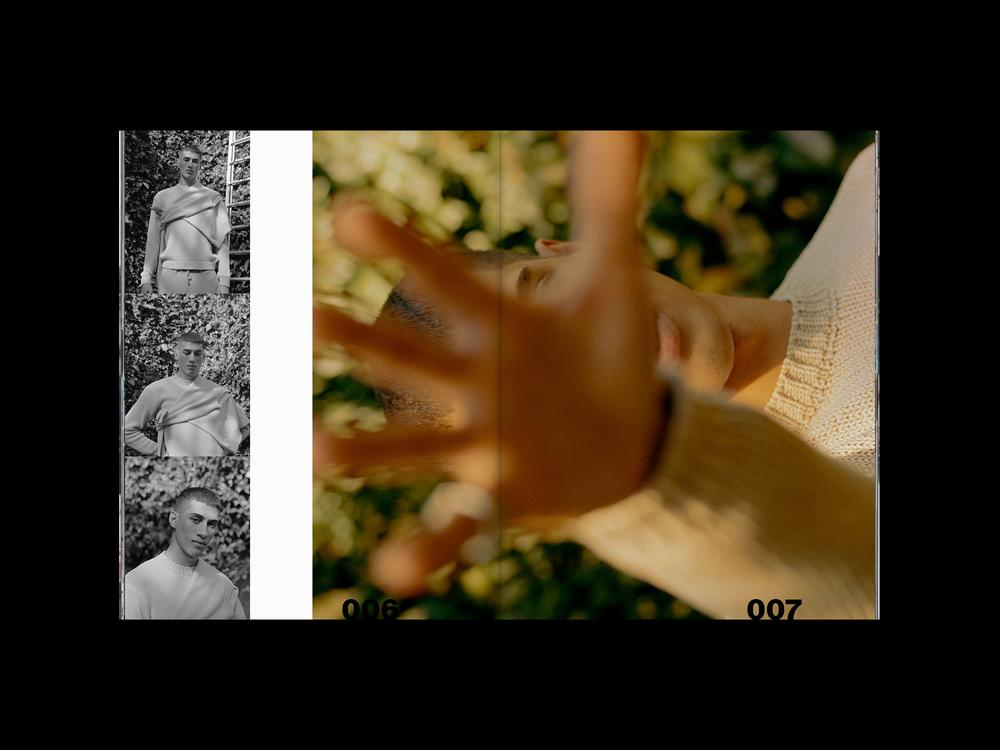

The political leaders of Minneapolis have power over city-owned streets and can encourage Hennepin county to take action on streets under their jurisdiction in the city.
Contact your City Council member
Contact the mayor of Minneapolis
75% of car-pedestrian crashes resulting in severe injury or death occur on just 5% of Minneapolis roads (by mileage) – these streets comprise the high injury network. Streets within the network include stretches of Lake Street, Franklin Avenue, Lyndale Avenue, Hennepin Avenue, and Broadway Street NE, all of which are under the jurisdiction of Hennepin County.
Learn more about city, county, and state-level policies and plans that impact active transportation in Minneapolis.
City of Minneapolis Transportation Action Plan
These organizations are leading the way in non-motorized transportation advocacy work
Feeling inspired to read more? Here's a short list of books to check out.
Street Fight: Handbook for an Urban Revolution
Janette Sadik-Khan
Urban Street Design Guide
National Association of City Transportation Officials (NACTO)
Global Street Design Guide
Global Designing Cities Initiative and NACTO
The Death and Life of Great American Cities
Jane Jacobs
Life Between Buildings
Jan Gehl
For more information and pricing details, contact Catherine at cbretheim@gmail.com
